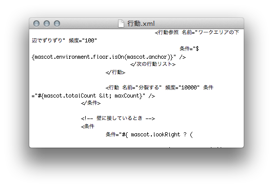

By the way, I'm making Pixiven, a chrome application to enjoy Pixiv more.
Shimeji is a desktop mascot, which walks on your desktop, and occationally senment itself.
Works on Mac OS X from 10.5 to 10.8.
Caution: When move the Shimeji.app file, Move it with containing folder. If you move Shimeji.app only, It can't launch. Why? Shimeji's folder contains all files for shimeji such as image files for each pose. To keep them out from the app itself, It can be customized very easily.
As windows version, To customize appearance and behavior of Shimeji, You only need to replace img and conf folder.
And files created for Mac version can also be used by windows version.
I'm sorry for inconvenience.
What version of OS are you using? Shimeji for mac is confirmed to work under from 10.5 to 10.8. I'm very sorry about that, Under older than 10.5, It will not work.
Installed Java RunTime? To launching Shimeji, You need the Java RunTime. Install that from the link and try again.
Did you move the Shimeji.app from its original position when zip file extracted? Move back the application to original position, or download the zip file again.
Are "行動.xml" and "動作.xml" in the conf folder? BTW, If you edit them using TextEdit, It automatically renames them "行動.txt" and "動作.txt". Be careful to extensions.
Are you using OS 10.8 (Mountain Lion)? The Gatekeeper should be bothering you. Try to open an app from a unidentified developer and exempt it from Gatekeeper
along this page.
None of these? Please contact to the maintainer.
Open System Preference.app, click Universal Access, Check Enable access for assistive devices.
But it just annoys you.
Sorry for inconvinience
Click the icon on the menu bar, and select "ばいばい" (Sorry for lack of translation, Please fork me!)
Files I had distributed until January 31st, 2012, Their configulation are set not to increase. Please download again, or fix conf/行動.xml like this image. Sorry
I apologize. I'll do it tomorrow.
Copy the img folder and conf folder in that Shimeji to Shimeji for Mac's folder.
Repository is on GitHub.
Feel free to mail me at nonowarn+shimeji@gmail.com
{kind=link}
{kind=link}